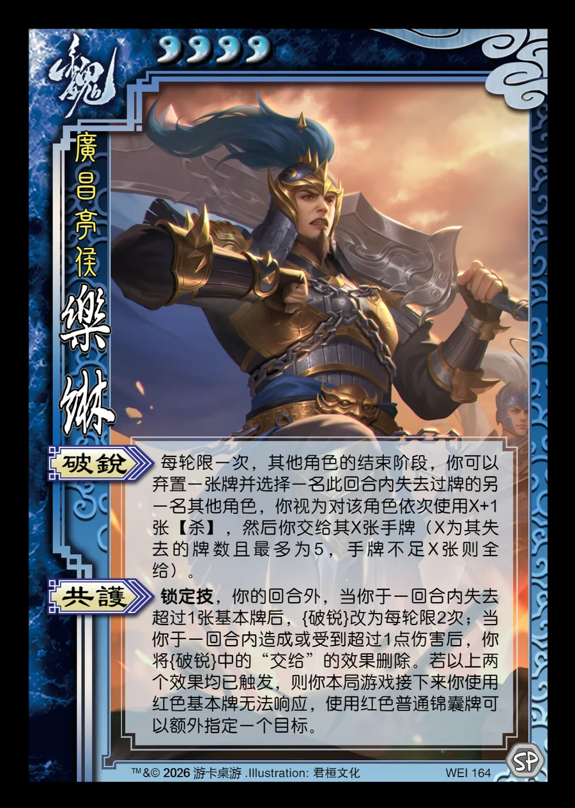

点击卡面查看大图
魏
乐綝
♥4广昌亭侯
破锐
每轮限一次，其他角色的结束阶段，你可以弃置一张牌并选择一名此回合内失去过牌的另一名其他角色，你视为对该角色依次使用X+1张【杀】，然后你交给其X张手牌（X为其失去的牌数且最多为5，手牌不足X张则全给）。
共护锁定技
锁定技，你的回合外，当你于一回合内失去超过1张基本牌后，{破锐}改为每轮限2次；当你于一回合内造成或受到超过1点伤害后，你将{破锐}中的“交给”的效果删除。若以上两个效果均已触发，则你本局游戏接下来你使用红色基本牌无法响应，使用红色普通锦囊牌可以额外指定一个目标。